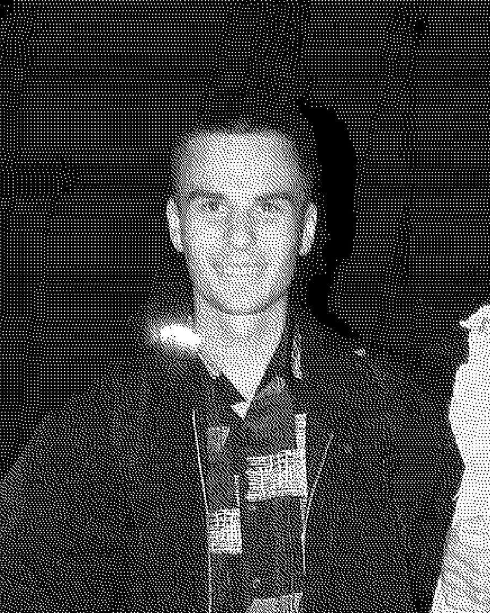

Владислав ЛебідьVladyslav Lebid
Луцьк, УкраїнаLutsk, Ukraine
«Я вільний, вільно малюю, і хочу, аби моє мистецтво допомагало іншим знайти шлях до істинної версії себе.»
Мультидисциплінарний художник. Народився і працює у м. Луцьк. Творчість охоплює як цифрову ілюстрацію, так і більш традиційні напрямки. В своїх роботах досліджує та створює українську міфологію.
“I am free, I create freely, and I want my art to help others find the truest version of themselves.”
Multidisciplinary artist. Born and working in Lutsk. His practice spans both digital illustration and more traditional forms of art. In his works, he explores and reimagines Ukrainian mythology.